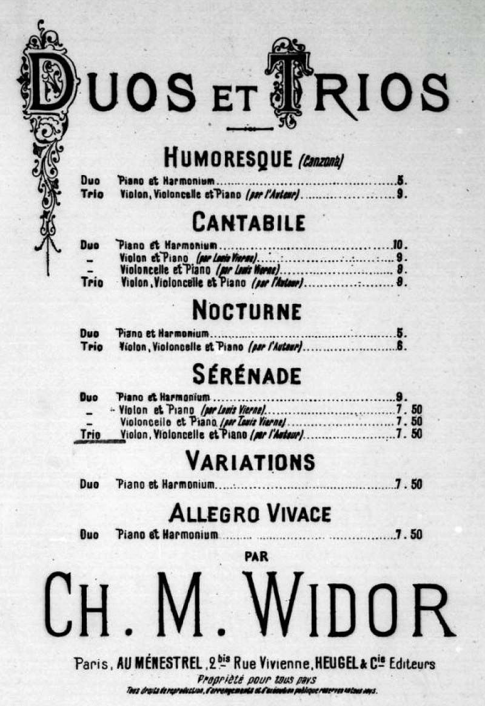

ヴィドール: ピアノ三重奏のための4つの小品
以前ヴィドールのピアノ三重奏曲（変ロ長調）の録音を探していて見つけたもの。ヴィドールのアルバムは意外と沢山出ているものの、配信されているもので見る限りそれらはやはり10曲ある『オルガン交響曲』に極端に偏っていて、このような室内楽を収めたものは貴重である。メインのピアノ三重奏曲は比較的知られた作品であるが、他の2曲『アルザスの夕べ』と『4つの小品』は珍しい。中でも『4つの小品』はとてもリラックスした感じのポピュラーっぽい音楽。4曲いずれも柔和で甘い旋律が特徴で、2曲目の≪Cantabile≫は一段と感傷的で印象に残る。
Charles-Marie Widor: 4 Trios
Trio Parnassus
(2012)
≪Cantabile≫と題されていて滑らかな歌が支配的ではあるが、3拍子でワルツの雰囲気も持つ。サロン向け音楽の性格が濃厚で、作りはシンプルかつ教科書的、初めて聴くのにどこかで耳にしていたような気になる。しかし具体的に似た曲が浮かぶわけではない（強いて言えばショスタコーヴィチの『ワルツ（ジャズ組曲）』あたりだが、それよりは典雅である）。アンコール・ピースとして恰好の一品かと思う。このトリオ・パルナッススによる演奏はテンポの選択が良く、生き生きとして美しい。

（出典: imslp.org）
{kind=link}
編曲っぽい雰囲気があったので調べてみると、作曲家の若い頃の作品である『6つの二重奏（ハルモニウムとピアノのための） 作品6』から4曲をトリオ向けに編曲したものらしい。原曲は1867年（23歳）、トリオ編曲は1890年(46歳)とかなりの隔たりがある。
ウジェル(Heugel)社が出版した楽譜の表紙（右）には、Duos et Trios として6曲がまとめてリストされている。ハルモニウムとピアノのデュオ版がオリジナルで、≪Variations≫と≪Allegro Vivace≫を除く4曲は作曲者自身によるトリオ編曲と記載されている。しかも≪Cantabile≫と≪Sérénade≫についてはヴィエルヌがヴァイオリンとピアノのデュオ版およびチェロとピアノのデュオ版の編曲を行っていて、それも一緒にリストされている。その他ここにはないが一部の曲にはピアノ連弾やオーケストラ編曲版もあるようで、当時の人気が想像される。
オリジナルのデュオ版の録音も聴くことができた(下)。トリオ版に比べればやはり地味だが、鄙びた感じは曲想には合っている。なお≪Cantabile≫の原題は≪Allegro Cantabile≫。パリにあるサン・シュルピス教会の先輩オルガニストであったルフェビュール゠ヴェリー（Lefébure-Wely）に献呈されている。『サロンのオーケストラ』と題されたこのアルバムにはサン゠サーンスの同様のデュオ小品集に加え、フランクの『前奏曲、フーガと変奏曲』（元はオルガン曲で、ピアノ編曲版も有名）のハルモニウムとピアノのデュオ版も含まれており、なかなか聴きごたえがある。なお、この演奏ではヴィドールの6曲中楽譜にある≪Allegro Vivace≫がなく≪Marche Nuptiale（結婚行進曲）≫という曲（劇音楽『四月の物語』Op. 64 中の一曲）が入っている。
Charles-Marie Widor: 6 Duos, Op. 6
Johannes Matthias Michel (harmonium)
Ernst Breidenbach (pf)
(1997)
(May 27, 2023)